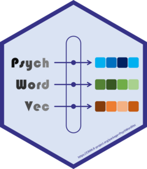

PsychWordVec: Word Embedding Research Framework for Psychological Science
Source:R/01-basic.R
PsychWordVec-package.RdAn integrative toolbox of word embedding research that provides: (1) a collection of 'pre-trained' static word vectors in the '.RData' compressed format https://psychbruce.github.io/WordVector_RData.pdf; (2) a group of functions to process, analyze, and visualize word vectors; (3) a range of tests to examine conceptual associations, including the Word Embedding Association Test doi:10.1126/science.aal4230 and the Relative Norm Distance doi:10.1073/pnas.1720347115 , with permutation test of significance; and (4) a set of training methods to locally train (static) word vectors from text corpora, including 'Word2Vec' doi:10.48550/arXiv.1301.3781 , 'GloVe' doi:10.3115/v1/D14-1162 , and 'FastText' doi:10.48550/arXiv.1607.04606 .
Author
Maintainer: Han Wu Shuang Bao baohws@foxmail.com (ORCID)